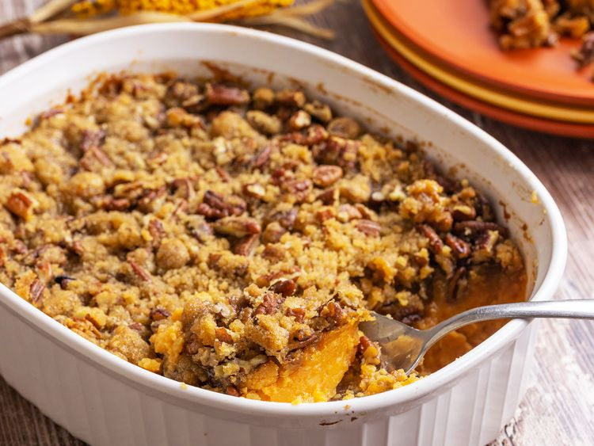

Sweet Potato Casserole

Description
This sweet potato casserole made with canned sweet potatoes is a lovely addition to your holiday feast. The crunchy pecan topping is a nice change from toasted marshmallows and the canned sweet potatoes save you valuable time in the kitchen, allowing you to focus on other parts of the meal.
Ingredients
Potatoes:
- 1 (40 ounce) can cut sweet potatoes, undrained
- ¾ cup white sugar, or to taste
- ⅓ cup unsalted butter, cut into pieces
- ⅓ cup milk
- 2 large eggs
- 1 teaspoon vanilla extract
Pecan Topping:
- 1 cup chopped pecans
- ¾ cup packed brown sugar, or to taste
- ⅓ cup all-purpose flour
- ⅓ cup unsalted butter, melted
Steps
- Gather all ingredients. Preheat the oven to 350 degrees F (175 degrees C). Butter a 2-quart baking dish.
- To make the sweet potato layer: Place canned sweet potatoes and their liquid in a medium saucepan, and bring to a boil.
- Remove from the heat and drain.
- Transfer potatoes to a medium bowl and mash with a fork or potato masher.
- Add white sugar, butter, milk, eggs, and vanilla; mix until well combined.
- Spread evenly into the prepared baking dish.
- To make the topping: Mix pecans, brown sugar, flour, and melted butter in a separate bowl until combined and crumbly.
- Sprinkle over sweet potato mixture.
- Bake casserole in the preheated oven until topping is golden brown, about 35 minutes.